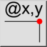

Poziția relativă
Bară de instrumente / Pictogramă:


Meniu: Informații > Poziția relativă
Scurtătură: I, V
Comenzi: infoposrel | iv
Bară de instrumente / Pictogramă:


Acest instrument produce coordonatele carteziene relative ale punctelor alese din desen.